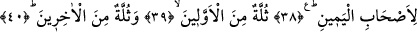

Başka bir hadis-i şerifte şöyle buyrulmuştur: “Hûrî, Allah’ın dostu mü’mine der ki:
Aziz ve Celil olan Allah’ın sana ikram ettiği kendisinin zikredildiği kaç tane zikir
meclisi olduysa bunların sayısınca ben güzel ahlakımla, bütün alaka ve nazımla,
bâkirelik ve gençiğimle senin yanına gelmişimdir. Sen dostlarının arasında oturmakta
olup beni Allah’tan isterken bana olan arzu ve iştiyakın benim sana olan arzu ve
iştiyakıma denkti. Bana olan muhabbetin benim sana olan muhabbetime denkti. Seni
bana beni de sana nasip ederek ikramda bulunan Allah’a yemin ederim ki, beni
Allah’tan bir kez istediğinde ben seni yetmiş kez istiyordum. Seni bana, beni sana
ikram eden Allah’a sonsuz hamd ü senâlar olsun, der.”[211]
38-39-40.
Bütün
bunlar
sağdakiler
içindir.
Bunların
birçoğu
önceki
ümmetlerdendir. Birçoğu da sonrakilerdendir.
Onlar, öncekilerden bir ümmet ve sonrakilerden bir ümmettir. Bir hadis-i şerifte
“Onların tamamı benim ümmetimdendirler”[212] buyrulmuştur. Buna göre, ashâb-ı
yemin gurubunun üçte ikisi Hz. Muhammed (s.a.) ümmetindendir, demektir. Bu duruma
göre, dinin emirlerine en güzel şekilde tâbi olanlar ve dini yaşamada onların yolunu
tutanlar “ilk çoğunluğu”; bunlardan sonra kıyâmete kadar gelecek olanlar da “ikinci
çoğunluğu” teşkil ederler.
Said b. Cübeyr (r.a.), Abdullah b. Abbas (r.a.)’nın şöyle dediğini rivâyet eder:
“Rasûl-i Ekrem (s.a.) bir gün yanımıza çıka geldi de şöyle buyurdu: «Bana geçmiş
ümmetler gösterildi. Kimi peygamberin yanında bir, kiminin yanında iki adam olduğu
halde geçmeğe başladılar. Bir peygamberin yanındaki dokuz kişilik bir gurupla,
birinin yanında bu sayıda bir gurup olmadığı halde, diğer bir peygamberin ise
yanında hiç kimse bulunmadığı halde geçtiğini gördüm. Derken bütün ufku kaplamış
büyük bir karaltı gördüm. Bana şöyle şöyle bak denildi. Bütün ufku kaplayan çok
büyük bir kalabalık daha gördüm. Bana: İşte bunlar senin ümmetindir. Bunlarla
birlikte hiç bir hesap sorulmadan cennete yetmiş bin kişi girecektir, denildi.»”[213]
Abdullah b. Mesud (r.a.), Rasûl-i Ekrem (s.a.)’in şöyle buyurduğunu rivâyet
etmektedir: “Bu gece peygamberler kendilerine tâbi olanlarla birlikte bana
gösterildi. Bir de Musa (a.s) İsrailoğulları’ndan bir cemâat arasında bana geldi.
Onları görünce hareket ederek: «Rabbim bunlar da kim?» dedim. «Bu kardeşin Musa
ve kendisine tâbi olanlardır» denildi. Bunun üzerine «benim ümmetim nerede?» diye
sordum. Bana «sağına bak» denildi. Bir de ne göreyim, Mekke’nin tepeleri adamların
yüzleriyle kaplanmış. «İşte bunlar senin ümmetindir, razı oldun mu?» denildi.
«Rabbim ben razıyım, razı oldum» dedim. «Soluna bak» dediler. Bir de ne göreyim!
Ufuk adamların yüzleriyle kaplanmış. «Razı oldun mu?» denildi. «Rabbim razıyım,